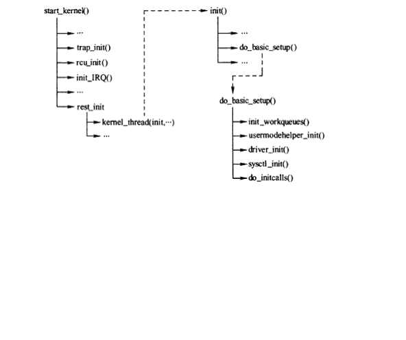

#define pure_initcall(fn) __define_initcall("0",fn,1) //纯粹的初始化调用
#define core_initcall(fn) __define_initcall("1",fn,1) //主要的初始化调用
#define core_initcall_sync(fn) __define_initcall("1s",fn,1s)
#define postcore_initcall(fn) __define_initcall("2",fn,2) //相对次要的初始化调用
#define postcore_initcall_sync(fn) __define_initcall("2s",fn,2s)
#define arch_initcall(fn) __define_initcall("3",fn,3) //与硬件架构相关平台设备的初始化调用
#define arch_initcall_sync(fn) __define_initcall("3s",fn,3s)
#define subsys_initcall(fn) __define_initcall("4",fn,4)
#define subsys_initcall_sync(fn) __define_initcall("4s",fn,4s)
#define fs_initcall(fn) __define_initcall("5",fn,5)
#define fs_initcall_sync(fn) __define_initcall("5s",fn,5s)
#define rootfs_initcall(fn) __define_initcall("rootfs",fn,rootfs)
#define device_initcall(fn) __define_initcall("6",fn,6)
#define device_initcall_sync(fn) __define_initcall("6s",fn,6s)
#define late_initcall(fn) __define_initcall("7",fn,7) //晚的初始化调用
#define late_initcall_sync(fn) __define_initcall("7s",fn,7s)
#define module_init(x)__initcall(x);
#define__initcall(fn)device_initcall(fn)
在上面的不同的优先级中，
数字越小，优先级越高。
同一等级的优先级的驱动，加载顺序是链接过程决定的，结果是不确定的，我们无法去手动设置谁先谁后。
不同等级的驱动加载的顺序是先优先级高，后优先级低，这是可以确定的。
所以，late_initcall还要在module_init的后面
所有的__init函数在区段.init.text区段中，同时还在.initcall.init中还保存了一份函数指针，
在初始化时内核会通过这些函数指针调用这些__init函数指针，
并在整个初始化完成后，释放整个init区段（包括.init.text，.initcall.init等）。
这些函数在内核初始化过程中的调用顺序只和这里的函数指针的顺序有关
中所述的这些函数本身在.init.text区段中的顺序无关。
在2.6内核中，initcall.init区段又分成7个子区段
不同的区段，调用的顺序不一样，数字越小的优先级越高。
详细解说：
在内核源代码中，platform设备的初始化（注册）用arch_initcall（）调用，它的initcall的level为3；
而驱动的注册用module_init（）调用，即device_initcall（），它的initcall的level为6。
#definemodule_init(x)__initcall(x);
#define__initcall(fn)device_initcall(fn)
阶段二：
在linux系统中：
Linux系统启动过程很复杂，因为它既需要支持模块静态加载机制也要支持动态加载机制。模块动态加载机制给系统提供了极大的灵活性，驱动程序既可支持静态编译进内核，也可以支持动态加载机制。Linux系统中对设备和子系统的初始化在最后进行，主要过程可以用下图表示。

图1
进入子系统初始化时，在内核init进程中进行设备初始化，最为复杂、诡异的机制莫过于do_initcalls()函数调用，该函数完成了所有需要静态加载模块的初始化，需要进行静态加载的内核模块，需要使用一些特定的宏进行处理，下面详细来说明一些linux内核中initcalls机制。
先来看看do_initcalls()函数原型：

图2
核心部分是639~671之间，该部分是一个函数指针调用，遍历_initcall_start~_initcall_end范围，逐个调用函数指针。
那_initcall_start~_initcall_end之间存放的是什么呢，可以以下面一幅示意图来说明。

图3
图左边是地址指针，右边是相关宏，使用相关宏处理函数指针，可以将被处理的函数指针放在特定的指针范围内。例如，网络设备层初始化函数是net_dev_init()，定义在net/core/dev.c中，在该函数下方有条宏处理subsys_initcall(net_dev_init)，该宏完成将net_dev_init函数指针放在上图中.initcall4.init段中，在do_initcalls()函数调用时，其处于_initcall_start~_initcall_end直接，所以net_dev_init()就这样被调用了。
这种机制真是比较巧妙，也比较难以理解，设计初衷就是为了实现一个通用的启动流程，使移植或扩展时，只需要对需要启动加载的模块进行宏处理即可。
下面来详细了解这种机制的实现方法。
先说一说gcc对手动定位代码段位置的支持，_attribute_是gcc的关键字，指示编译器给符号设置特定属性。编译完成后输入到链接器的是各个带有符号表的文件，链接器对各个文件中符号进行重定位，_attribute_在该阶段进行处理，将指定符号放在链接生成文件段中特定位置，不单只指代码段，也包括数据段，如系统初始化中经常见到的_initdata，即将指定符号放到数据段特定位置。
当然，具体这些段是如何生成的，也是有文件进行配置，即在链接配置文件arch/xxx/vmlinux.ds.S.中,如下

图4
在2.6.16内核中INITCALLS已直接被替换为
*(.initcall1.init)
*(.initcall2.init)
*(.initcall3.init)
*(.initcall4.init)
*(.initcall5.init)
*(.initcall6.init)
*(.initcall7.init)
这和图3中的结构是对应的。接下来看看内核提供了哪些宏定义用来处理特定函数指针和数据。在include/linux/init.h文件中，包括各种常见的包装。
#define __define_initcall(level,fn) \
static initcall_t __initcall_##fn __attribute_used__ \
__attribute__((__section__(".initcall" level ".init"))) = fn
#define core_initcall(fn) __define_initcall("1",fn)
#define postcore_initcall(fn) __define_initcall("2",fn)
#define arch_initcall(fn) __define_initcall("3",fn)
#define subsys_initcall(fn) __define_initcall("4",fn)
#define fs_initcall(fn) __define_initcall("5",fn)
#define device_initcall(fn) __define_initcall("6",fn)
#define late_initcall(fn) __define_initcall("7",fn)
可以看出，内核为满足不同初始化等级，设计了1~7共7个等级，不同等级初始化代码用对应的宏进行处理，读者可以对照上表进行理解一下。还有其它一些宏，用于各种任务需求，如模块加载宏module_init()，module_exit()，其处理又略有不同，读者可以自己理解一下。
总的来说，initcalls机制提供给内核开发者或驱动开发者一个接口，方便将自己的函数添加到内核初始化列表中，在内核初始化最后阶段进行处理。
阶段三：
当我们使用make menuconfig来配置内核时，将某个module配置为m时，MODULE这个宏就被定义了，而当配置为y时，则没有定义，具体的实现在kernel的根Makefile(-DMODULE)里。
现在我们先看下第一种情况，即把module配置为m的情况，即else分支的代码。
先看下initcall_t的定义：
typedef int (*initcall_t)(void);
它是一个接收参数为void, 返回值为int类型的函数指针。这样就明白了，其实前两句话只是做了一个检测，当你传进来的函数指针的参数和返回值与initcall_t不一致时，就会有告警。
重点在第三句，是使用alias将initfn变名为init_module，我们知道，kernel 2.4版本之前都是用init_module来加载模块的。这样做应该是为了不用修改load module的那块代码吧。
当我们调用insmod将module加载进内核时，会去找init_module作为入口地址，即是我们的initfn, 这样module就被加载了。
取nvme.ko为例，我们可以通过objdump -t nvme.ko 查看该模块的符号表，发现init_module和nvme_init指向同一个偏移量。如下：
现在看第二种情况，即我们选择将模块编进内核，让它随内核启动而加载。
这种情况下module_init最终会调用__define_initcall宏，这个宏的作用就是将我们的初始化函数放在".initcall" level".init"中。
在这里是.initcall6.init, 它的位置可以在Vmlinux.lds.h里面找到：
复制代码
#define INITCALLS \
*(.initcall0.init) \
*(.initcall0s.init) \
*(.initcall1.init) \
*(.initcall1s.init) \
*(.initcall2.init) \
*(.initcall2s.init) \
*(.initcall3.init) \
*(.initcall3s.init) \
*(.initcall4.init) \
*(.initcall4s.init) \
*(.initcall5.init) \
*(.initcall5s.init) \
*(.initcallrootfs.init) \
*(.initcall6.init) \
*(.initcall6s.init) \
*(.initcall7.init) \
*(.initcall7s.init)
复制代码
而INITCALL可以在vmlinux.lds.S里面找到：
复制代码
.init.text : AT(ADDR(.init.text) - LOAD_OFFSET) {
__init_begin = .;
_sinittext = .;
*(.init.text)
_einittext = .;
}
.init.data : AT(ADDR(.init.data) - LOAD_OFFSET) { *(.init.data) }
. = ALIGN(16);
.init.setup : AT(ADDR(.init.setup) - LOAD_OFFSET) {
__setup_start = .;
*(.init.setup)
__setup_end = .;
}
.initcall.init : AT(ADDR(.initcall.init) - LOAD_OFFSET) {
__initcall_start = .;
INITCALLS
__initcall_end = .;
}
.con_initcall.init : AT(ADDR(.con_initcall.init) - LOAD_OFFSET) {
__con_initcall_start = .;
*(.con_initcall.init)
__con_initcall_end = .;
}
复制代码
上面贴出来的代码是系统启动时存放初始化数据的地方，执行完成后不再需要，会被释放掉。根据上面的内存布局，可以列出初始化宏和内存的对应关系：
复制代码
_init_begin -------------------
| .init.text | ---- __init
|-------------------|
| .init.data | ---- __initdata
_setup_start |-------------------|
| .init.setup | ---- __setup_param
__initcall_start |-------------------|
| .initcall1.init | ---- core_initcall
|-------------------|
| .initcall2.init | ---- postcore_initcall
|-------------------|
| .initcall3.init | ---- arch_initcall
|-------------------|
| .initcall4.init | ---- subsys_initcall
|-------------------|
| .initcall5.init | ---- fs_initcall
|-------------------|
| .initcall6.init | ---- device_initcall
|-------------------|
| .initcall7.init | ---- late_initcall
__initcall_end |-------------------|
| |
| ... ... ... |
| |
__init_end -------------------
复制代码
而各个initcall被调用的地方在kernel_init-》do_basic_setup-》do_initcalls里面：
复制代码
static void __init do_initcalls(void)
{
initcall_t *call;
int count = preempt_count();
for (call = __initcall_start; call < __initcall_end; call++) {
ktime_t t0, t1, delta;
char *msg = NULL;
char msgbuf[40];
int result;
if (initcall_debug) {
printk("Calling initcall 0x%p", *call);
print_fn_descriptor_symbol(": %s()",
(unsigned long) *call);
printk("\n");
t0 = ktime_get();
}
result = (*call)();
...
}